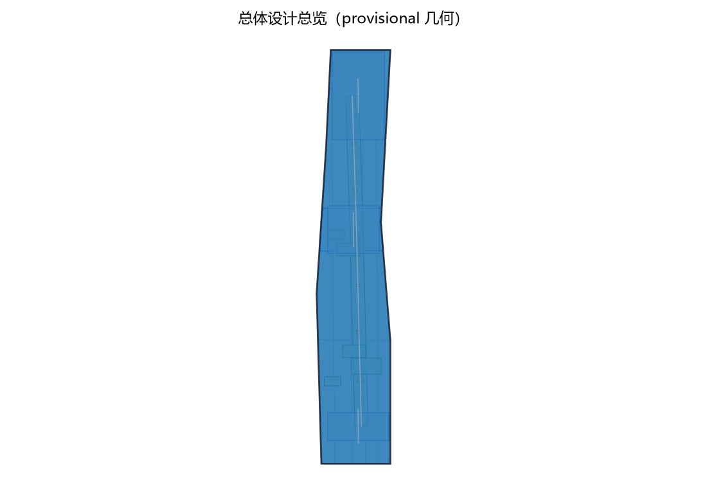
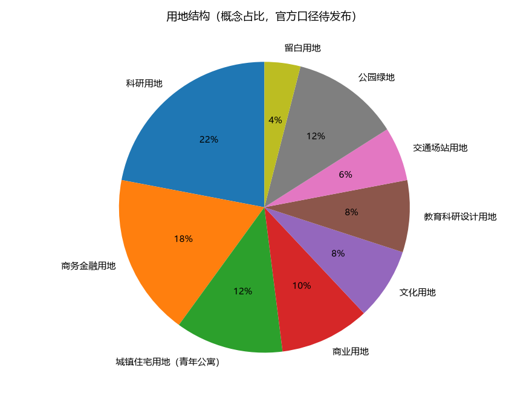
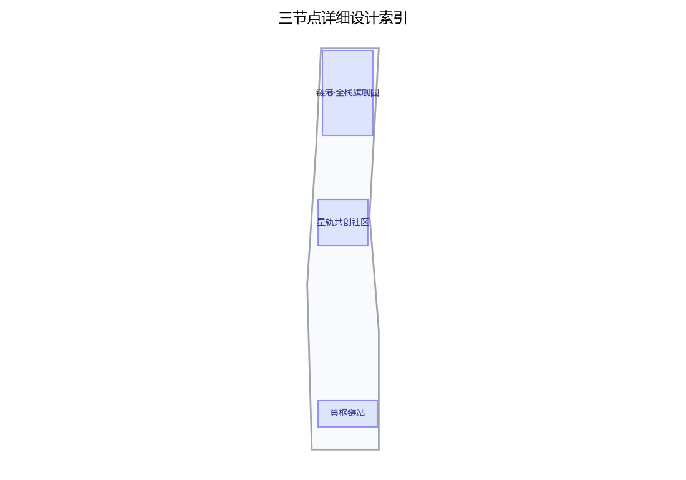
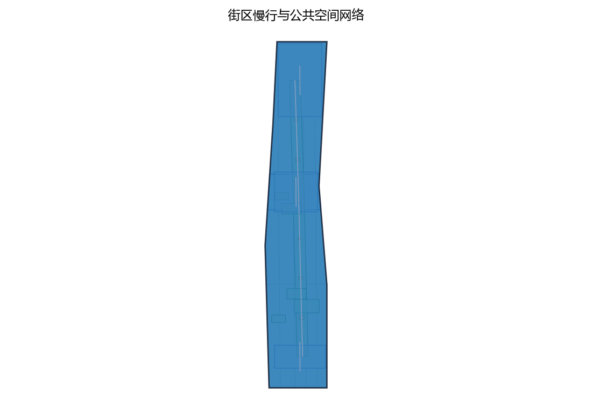
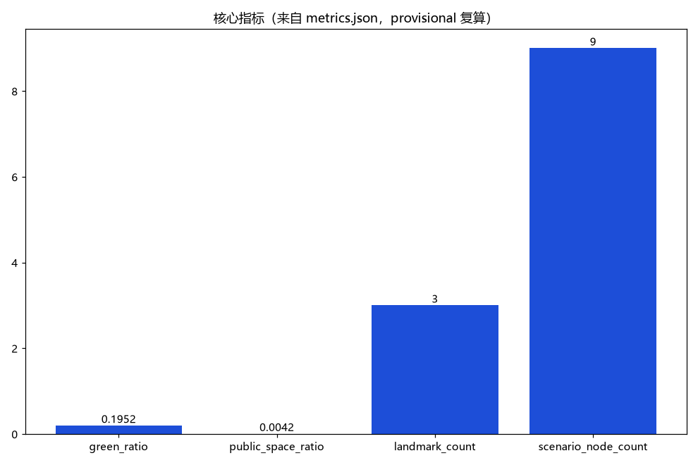

链驰谷：众智园AI自主创新加速区（概念）
以「链式创新+加速孵化」为锚组织「链驰谷」(ChainScape Valley)AI全栈自主创新体系集聚概念：三节点——链港·全栈旗舰园（链式创新旗舰园区：基础模型、算力、数据、行业应用链式布局与加速孵化）、星轨共创社区（青年科学家与创业者共创社区：青年居住+共创工坊+社群空间）、算枢链站（算力数据与开放中试基础设施节点：绿色算力调度+开放中试+公共评测），六类AI+场景（智能研发协作与共享实验室、AI会展路演、物流分拣与无人机配送点、无障碍伴随、客流感知调度、园区接驳与无人巴士）嵌入园区日常，数据匿名聚合+人工复核、禁止个体追踪，存量更新为主+增量做精，设施模块化可逆。全部为概念建议、参考方案，基于 provisional 边界，官方数据发布后复算。
方案名称与总体构想(概念):链驰谷 / ChainScape Valley
"链"取AI全栈链式创新,"驰"承京张铁路百年速度基因与"加速孵化"之义,"谷"喻创新聚落。总体构想以"链式创新+加速孵化"为锚,立足海淀区中关村科学城,沿京张铁路遗址公园组织"基础模型—算力—数据—行业应用"全栈链条,呼应百年京张文化带、都市AI生活体验带、AI融合创新带三大定位,服务AI全栈自主创新体系、世界级AI创新生态、AI+场景赋能新范式、智能化AI活力城市、AI治理全球话语权五大功能,并以链港·全栈旗舰园、星轨共创社区、算枢链站三处概念点位构筑众智园AI自主创新加速区骨架。三大定位与五大功能的概念映射(概念):百年京张文化带对应遗址公园文脉主轴,都市AI生活体验带对应六类AI+场景嵌入园区日常,AI融合创新带对应沿带全栈链条布局;五大功能依次落实为全栈创新体系组织、加速生态运营、场景赋能范式、活力城市形态与治理规则框架,并在指标体系与合规矩阵中逐项对照。本方案为应征概念文本:面积均为官方文本口径,几何以组织方发布为准,落地建议均供专业团队深化研究。
设计依据与资料清单
资料清单所列总体规划、分区规划与街区踏勘等均为概念工作依据清单，并非本包已获取的数据；本包实际使用的全部数据见 sources.json，未获取项已在风险与缺失数据说明中如实标注。
设计依据:(1)征集公告与任务书公开信息——三大定位、五大功能、三层范围与三区两翼及官方文本口径面积;(2)北京市及海淀区公开规划与工作报告中关于中关村科学城、京张铁路遗址公园的公开表述(概念引用,不作法定依据);(3)京张铁路历史文献、遗址公园公开资料与概念性现场踏勘记录;(4)组织方尚未发布官方边界多边形,现有几何均为provisional,本方案不采用任何自拟精确坐标与面积。资料清单:任务书、官方口径面积文本、公开地图、遗址公园影像图集、踏勘记录与访谈纪要(概念层面),具体版本以组织方要求为准。
证据锚点：来源、来源（组织方公告与任务书为文本口径依据）。
三层范围工作框架
三层成果逐级传导：统筹研究输出的全栈链式布局与加速职能判断约束总体设计，总体设计校核的用地兼容、建筑规模与基础设施接口再落实到节点详设；每层均保留与任务书对应章节的机器可读证据锚点，便于评审对照。
三层范围均为官方文本口径:统筹研究范围43.6平方公里,承担产业与未来城市研究;总体设计范围11.4平方公里,承担城市更新与控规深度城市设计(概念深度、非法定);重点区域合计368.4公顷,本次方案以其中众智园AI自主创新加速区(约192公顷)为深化对象,北京AI原点社区与大钟寺AI产业集聚区仅作协同界面研究。工作框架为"宏观研判—中观设计—微观深化"递进衔接,各层输出相互校验;因官方边界未发布,面积复算与几何校核留待边界发布后由专业团队实施(参考方案)。
概念映射:三层范围均处海淀区京张铁路沿线与AI创新带脉络之上——统筹层承接百年京张文化带叙事与AI融合创新带全局布局,总体层落实都市AI生活体验带场景与智能化AI活力城市形态,节点层承载AI全栈自主创新体系、世界级AI创新生态与AI+场景赋能新范式,并支撑AI治理全球话语权的对话空间(概念建议)。
证据锚点：来源（三层范围划分依据任务书官方文本口径）。
统筹研究范围产业与未来城市研究
产业研究识别众智园加速区与AI全栈自主创新体系的协同机会，形成「链式创新+加速孵化」的未来城市形态判断；未来城市研究仅作方向性预判，不构成对用地与投资的承诺。
43.6平方公里范围沿京张遗址公园南北展开,串联清河、上地/中关村软件园、知春路、中关村大街、学院路等真实节点,形成"轨道枢纽—软件集群—创新源"的梯度叙事:上地与软件园提供工程化与商业化成熟度,学院路与中关村大街提供基础研究与人才源。产业研究概念:既有软件互联网集群向AI全栈演进,补强基础模型、算力、数据与行业应用短板。未来城市研究概念:以AI治理全球话语权为主线,依托沿带场景试验、数据合规沙盒与多方协商机制(概念建议),同时塑造都市AI生活体验带与百年文化带叙事。
证据锚点：来源（边界为 provisional，研究范围仅作概念示意）。
总体设计范围城市更新与控规深度城市设计
总体设计强调存量更新与增量做精：低效办公向研发孵化转型，建立保留—改造—更新分类指引；对控规指标只做校核建议，不预设数值结论。
11.4平方公里以存量更新为主基调,控规深度城市设计为概念参考而非法定成果,方向包括:用地混合与弹性用途、街坊尺度与高度边界、遗址公园界面与沿街活力、天际线与视廊。空间衔接上,众智园加速区联结中关村科技服务翼(要素全球化配置、中关村IP与资本赋能)与小月河场景赋能翼,形成"创新加速—服务赋能"回路。城市设计导则条目为概念建议:沿带界面连续度、底层实验与公共功能渗透、公共空间就近可达、无障碍全覆盖、风貌要素库等,供专业团队深化为可操作导则。


证据锚点：来源、来源。
重点区域详细设计
三节点的设施选址均为概念点位，须经产权协调与专业审查后重新落位；节点间的「旗舰—共创—底座」链构成完整空间叙事，详细平面与剖面以图册与 geometry 层表达。
重点区域合计368.4公顷(官方文本口径),含三区两翼;本次深化众智园加速区(约192公顷),提出"一带两链三节点"概念结构:一带为遗址公园活力带,两链为沿带主链与横向支链。三处原创概念节点均标注为概念点位:①链港·全栈旗舰园——链式创新旗舰园区,承载基础模型、算力、数据、行业应用链式布局与加速孵化;②星轨共创社区——青年科学家与创业者共创社区;③算枢链站——算力数据与开放中试基础设施节点。节点间以慢行链、共享实验室网络与接驳环线连通,形成"旗舰—社区—底座"的完整加速链路。

证据锚点：空间数据（三节点示意多边形来自本包 geometry/key_areas.geojson）。
AI 创新生态、人才画像与 AI+ 场景
全栈链式布局(概念):基础模型研发、绿色算力调度、数据要素治理与开放、行业应用加速四环相扣,附设公共评测、中试与合规备案辅导。人才画像:25—40岁前沿青年科学家与高潜工程师,本土与海归并蓄,跨算法、芯片、交互、伦理等交叉学科,重开源、重转化,核心诉求为共享算力、敏捷实验与社群归属。AI+场景(概念):智能研发协作与共享实验室、AI会展路演中心、物流分拣与无人机配送点、无障碍伴随、客流感知调度、园区接驳与无人巴士。隐私底线:感知数据边缘处理、匿名聚合后仅用于服务调度,不做个体识别与画像,关键服务决策设人工复核,数据用途与期限公开可查;严禁以监控为目的布设感知。
生态组织(概念):以链式创新主轴组织AI全栈生态,在四环之上叠加"加速—评测—对接—转化—实训"五类AI服务——AI企业加速营面向初创与二次创业团队,提供共享算力、公共评测与合规备案辅导;AI技术评测中心承担模型能力与数据质量的公共测试,结果公示并附备案辅导;投融资对接依托AI会展路演中心组织创投、产业资本与中关村IP、资本赋能对话;成果转化以开放中试线与共享实验室承接高校科研院所的工程化放大;AI实训与人才驿站面向青年科学家与在校生开设AI实训课程与开源共创活动,五类服务共同构成加速器的日常运营骨架。
运营机制(概念):以原创机制串联加速器日常——「中智源加速公约」约定入驻企业、高校与运营方在数据合规、评测流程与成果归属上的共守条款;「算力积分通兑」以算力积分打通共享算力、中试机时与路演场地预约,多退少补、公开可查;「AI治理议事厅」定期组织企业、居民与政府代表就场景布设、数据用途与人工复核点共商。机制落地坚持公示、备案与分级复核:场景启用前公示数据用途与期限,算法与模型按规备案,人工复核按风险分级配置;场景运营强调"预约制、轮换制、志愿结对"等柔性组织方式,共享实验工位与中试机时预约排期,展演与市集空间轮换使用,青年科学家与创业团队志愿结对辅导,以「AI治理议事厅」承接居民意见并公开答复。
AI治理三句式(概念):仅处理匿名聚合数据;关键决策一律人工复核;禁止过度监控(不进行个体识别式追踪、不建立大规模行为画像)。
| 场景卡 | 落位空间 | 运营机制 | 人工复核点 | | 企业加速营 | 链港·全栈旗舰园加速孵化单元 | 「中智源加速公约」入驻、导师结对辅导 | 入营筛选、阶段评审与毕业鉴证人工复核 | | 技术评测中心 | 算枢链站公共评测与开放中试区 | 评测预约排期、结果公示与备案辅导 | 评测样本抽验与结论签发人工复核 | | 投融资对接路演 | AI会展路演中心 | 路演排期预约、「算力积分通兑」抵扣场地 | 项目信息披露与撮合对接人工复核 | | 成果转化中试线 | 共享实验室网络与开放中试线 | 「中试工位轮换共享」、积分通兑机时 | 转化合同条款与合规审查人工复核 | | AI实训与人才驿站 | 星轨共创社区实训工坊 | 课程志愿预约、青年科学家志愿结对 | 实训认证与补贴记录人工复核 |
证据锚点：来源（AI 生成内容治理表述的参照依据）。
用地、建筑规模与拆改留方案
拆改留坚持留改拆排序：保留结构完好建筑与遗址文化要素，改造低效办公与旧楼宇，增量集中于旗舰园门户、中试设施与会展路演建筑三处「点睛」并严控规模；全部面积为概念口径，官方数据发布后复算。
概念口径遵循"留改为主、增量做精":存量楼宇产业置换,引导低效办公向研发孵化转型;共享实验与弹性办公改造,在楼内穿插可预订实验室与灵活工位;集群式社区营造,围绕星轨共创社区组织青年居住、共创工坊与社群空间。拆改留仅给概念区间(如留改约八成、拆约一成至两成,以实测评估为准),不构成承诺;增量集中于旗舰园门户、中试设施与会展路演建筑三处"点睛"。建筑规模与容积率不预设数值,待官方边界发布后由专业团队依规复算(参考方案)。
证据锚点：来源（用地分类名称参照现行国标口径）。
交通、轨道、市政与公共服务设施
接驳组织以轨道站点+园区环线为核心，无人巴士与按需小巴为概念载体，慢行优先；市政结合绿色算力供能与余热回收预留接口；公共服务按「共享实验室网络+青年公寓+托育配套」配置，AI决策均设人工复核。
交通概念:依托清河、知春路、大钟寺等轨道站点(以公开线路信息为准)组织"轨道+园区接驳"体系,接驳以无人巴士环线与按需小巴为主(概念),慢行优先;货运依托物流分拣点与合规低空航线前置研究。市政概念:绿色算力供能,余热回收与绿电交易方向研究,廊道集约化。公共服务概念:共享实验室网络、会展路演中心、青年公寓与托育配套、无障碍系统、AI治理对话空间。以上设施位址均需专业团队依据官方边界与现状管线实测校核,本方案仅提供需求清单与布局逻辑(概念建议)。
证据锚点：来源（市政与慢行设计表述的方法参照）。
蓝绿空间、公共空间与城市风貌
遗址公园绿色脊梁+小月河绿廊整合蓝绿空间，站台记忆、轨枕铺装与百年时刻线塑造文脉；设施以模块化、可逆设计嵌入园区，风貌导则以工业遗产语汇与轻盈AI界面兼容并蓄。
以京张铁路遗址公园为绿色脊梁,贯穿三处概念节点与两翼;小月河绿廊呼应场景赋能翼。沿线以"站台记忆、轨枕铺装、百年时刻线"等低成本概念手法塑造可识别文脉:风貌上以铁路工业遗产语汇(桁架、信号灯、轨枕元素)与现代AI建筑的轻盈界面兼容并蓄,避免同质化;街道强调林荫慢行、断面重构与无障碍连续;公共空间运营以AI会展、周末市集与青年共创活动激活,使百年文化带兼具日常活力与产业仪式感(均为概念建议)。

证据锚点：来源（蓝绿空间组织的方法参照）。
更新项目清单、实施政策与分期计划
三阶段项目清单（近期1-3年/中期3-5年/远期5-10年）为概念清单，规模与投资估算均为建议性表述；政策建议（混合用地弹性、更新奖励挂钩、租金梯度）不构成政府或运营方承诺。
概念项目清单:链港旗舰园启动区、星轨共创社区、算枢链站、共享实验室网络、AI会展路演中心、接驳环线与无人巴士、遗址公园界面提升等(均为概念建议)。实施政策方向(概念):混合用地弹性、更新贡献与奖励挂钩、租金梯度与先租后买、数据合规沙盒与算法备案辅导、中关村IP与资本赋能对接。三期结构(概念节奏):「近期(1-3年)」开园季启动与存量置换优先,以链港旗舰园门户区与星轨共创社区为试点区域,先行投用共享实验室与AI会展路演中心并建立运营基线;「中期(3-5年)」三节点主体成型,路演周、黑客松常态化,算枢链站开放公共评测与中试;「远期(5-10年)」全栈生态与评测对话平台成熟,机制全面运营。参与主体(概念):政府(组织引导、更新政策衔接与监督复核)、企业(加速器运营方、算力与数据服务商、入驻AI企业与创投资本)、高校与科研院所(联合实验室、实训与成果转化)、居民与社区组织(居民议事、志愿与监督)。可测指标名称(概念,先列名称,数值待运营基线建立后复算):共享实验室预约率、加速营毕业与转化对接数、路演投融资对接撮合数、感知数据合规率(匿名聚合全覆盖、人工复核100%)、无障碍覆盖达标率、慢行与接驳分担率等。公众参与机制(概念):设立居民议事与意见征集通道并公开答复,实施进展按年度公示,年度活动(开放日、改造意见现场会)与路演周、黑客松并行,形成"及时征集—公开答复—年度公示"闭环。活动体系:开园季、路演周、黑客松、青年科学家论坛、揭榜挂帅等。
证据锚点：来源（分期与实施条目对应任务书要求）。
指标体系、面积复算与合规矩阵
目标—指标—校验三层概念指标体系进入 metrics.json；面积复算以本包 provisional 几何为底，官方数据到位后整体复算并标注复算版本。
概念指标体系:研发孵化空间占比、共享设施可达率、慢行与接驳分担率、绿色建筑与可再生能源占比、无障碍覆盖、感知数据合规率(匿名聚合全覆盖、人工复核100%)。面积复算坚持官方文本口径:统筹研究范围43.6平方公里、总体设计范围11.4平方公里、重点区域合计368.4公顷、众智园约192公顷、北京AI原点社区约104公顷、大钟寺AI产业集聚区约72公顷,全部标注官方文本口径,不发布任何新增精确数值。合规矩阵将各项设计举措与三大定位、五大功能逐项对照,暂缺项标注"待深化"。

证据锚点：指标、指标、来源。
风险、版权与合规说明
本方案为概念研究性设计，不构成行政审批依据；正式实施前须完成产权协调、低空航线与接驳审批校核及安全评估。
几何风险:官方边界未发布,现有几何均为provisional,本方案不声称精确坐标与面积,复算留待官方发布后由专业团队实施。名称风险:"链驰谷/ChainScape Valley"及三处节点名称为本次原创概念命名,如与既有名称雷同纯属巧合,不代表关联。合规说明:本方案为应征概念文本,不构成法定规划结论,不预设法定指标,落地建议均以"概念建议、参考方案、可供专业团队深化研究"表述;AI与数据应用遵守个人信息保护、数据安全等法律法规精神,以匿名聚合与人工复核为底线;正文与命名为原创,引用均出自公开渠道。
证据锚点：来源（征集规则为权属与合规表述的依据）。
参考资料
参考资料以政府正式发布版本为准；本包 sources.json 仅收录可查证条目，未虚构任何官方数据或链接。
1)征集公告与任务书公开信息(以组织方发布为准);2)京张铁路历史与京张铁路遗址公园公开资料(含规划建设公开报道);3)北京市国土空间规划及海淀区公开规划信息(公开渠道概述引用,不作法定依据);4)中关村科学城、上地软件园等公开材料;5)铁路遗产保护与城市更新领域公开学术文献;6)概念性踏勘记录与访谈纪要。以上按类别列示,具体文件版本、编码与引用格式以组织方要求为准。
证据锚点：来源（本清单首条即组织方公开资料包）。